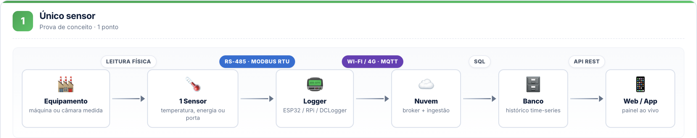
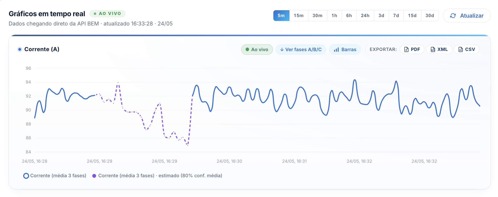
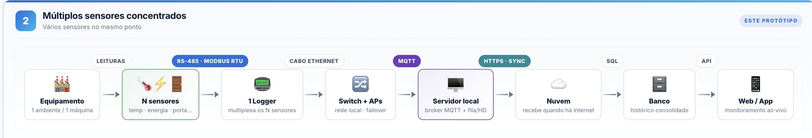
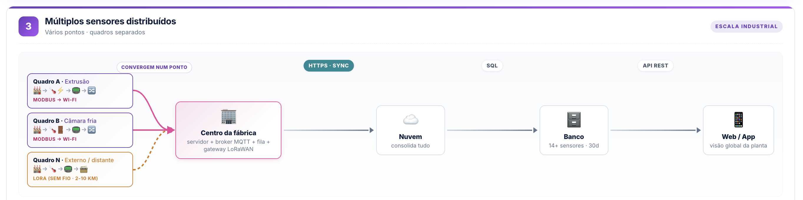
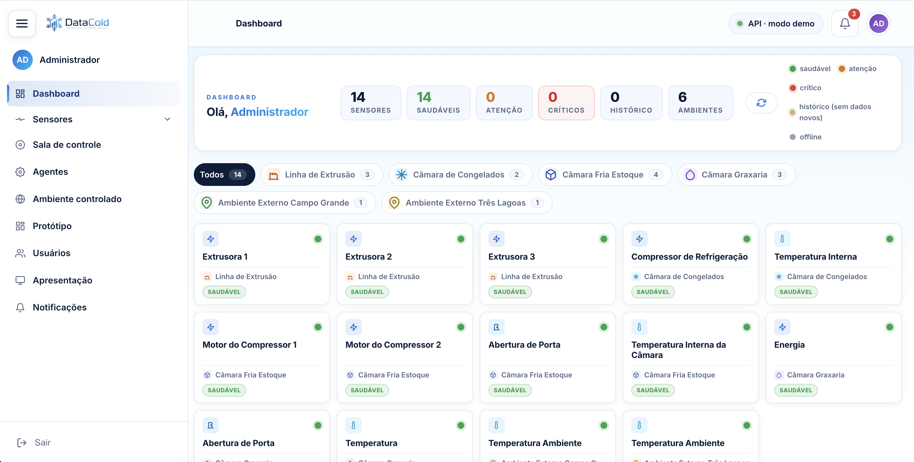
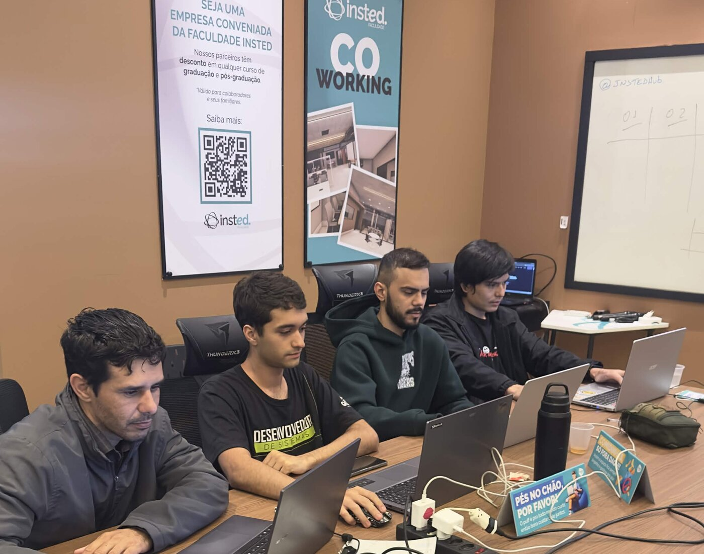

Lacunas silenciosas na telemetria
Internet cai 5 minutos · gateway trava · sensor reseta. O gráfico fica plano e ninguém percebe que aquele intervalo foi "cego".
Plataforma de telemetria que detecta, prevê e reconstrói falhas de conexão em sensores industriais — antes que virem prejuízo.
Na fábrica da Dale, um único sensor com queda de conectividade pode mascarar uma sobrecarga, um superaquecimento ou uma porta de câmara fria aberta — e a equipe só descobre quando o produto já estragou.
Internet cai 5 minutos · gateway trava · sensor reseta. O gráfico fica plano e ninguém percebe que aquele intervalo foi "cego".
Sem um agente vigiando a saúde do sensor, falhas só viram alerta quando alguém olha no painel. Em câmara fria, esse atraso é caro.
Hoje só existe um caminho: um único sensor por equipamento. Quem precisa de redundância ou cobertura maior fica sem alternativa.
Sem nobreak, qualquer oscilação elétrica derruba o sensor. Cada queda é mais um buraco no histórico — sem chance de reconstrução.
Sensor sem buffer local descarta tudo que coletou enquanto a rede estava fora. Não tem "envio em lote" depois.
Operador no chão de fábrica não fica olhando dashboard web. Precisa de push no celular quando algo realmente importa.
Combinamos modelos de instalação, hardware complementar, software inteligente e app mobile para dar à Dale liberdade total de escolha — barato, médio ou alto investimento, todos com agente reconstruindo dados perdidos.
Sobre o modelo atual da BEM (1 sensor por equipamento), nosso agente preenche as lacunas via ensemble estatístico (Hampel + SPLC + Kalman + Spline).
Vários sensores ligados ao MESMO gateway. Redundância dentro de UMA máquina crítica.
Sensores espalhados em pontos diferentes, cada um com seu canal. Cobertura ampla de toda a planta.
Intelbras EFB 1201. Garante o sensor ligado mesmo na queda de energia. Pequeno e barato.
Lógica de retry exponencial no logger E no gateway. Se cair, religa sem intervenção humana.
Coleta continua mesmo offline. Quando volta, sincroniza em lote. Zero perda.
Painel web com perfis Admin (parâmetros) e Operador (visualização) + 3 agentes algorítmicos.
Versão completa do painel no celular. Push notification para o operador no chão de fábrica.
Preenche lacunas com ensemble de 5 algoritmos clássicos de estatística (sem ML / redes neurais). Marca cada ponto com nível de confiança ≥ 70%.
Espelhamos a API da BEM em uma base própria e construímos uma sala que dispara falhas em vivo — pra mostrar o agente reagindo, sem esperar uma queda real no chão de fábrica.
GET /api/v1/data
·
/health
/proxy → buscarDados
·
disparar_falha


Funciona com a topologia que a BEM já vende hoje — 1 sensor por equipamento. O diferencial da DataCold é o agente reconstrutor: quando a conexão cai, o ensemble estatístico preenche os pontos perdidos com base no padrão histórico do próprio sensor.

Vários sensores monitoram a mesma máquina crítica, todos plugados num gateway central. Se um sensor falha, os outros 2 continuam reportando — a média descarta o outlier automaticamente.

Sensores espalhados em locais distintos, cada um com canal de comunicação independente. Falha local não derruba o monitoramento da planta inteira.
Vale pra qualquer um dos 3 modelos acima. Pequeno, barato e muda completamente o jogo se faltar energia no chão de fábrica.

Sem nobreak, qualquer oscilação na rede elétrica derruba o sensor — e a coleta para por minutos ou horas. Por menos de R$ 90 por ponto, o sensor segue ligado, o buffer enche, e quando a conexão volta, sincroniza tudo.
Logger percebe que a última resposta do servidor passou de N segundos sem ACK.
Tenta reconectar em intervalos crescentes (3s, 6s, 12s, 30s, 60s) — sem inundar a rede.
Quando reconecta, envia em lote tudo que ficou no buffer local. Sem perda de pontos.
Cada reconexão é registrada com motivo, duração e sucesso/falha — vira métrica no dashboard.
# reconexao.py async def conectar(): for n in range(1, 3): # 2× no router padrão if await wifi.conectar(SSID_PADRAO): return "ok" await sleep(2 ** n) # backoff 2s · 4s # falhou 2× → pula pro Wi-Fi mais próximo for rede in wifi.escanear_proximas(top=3): if await wifi.conectar(rede.ssid): return "ok · vizinho" return "offline"
Sensor lê a cada 3s e grava localmente, mesmo sem rede. SQLite ou flash no logger.
Cada ponto fica flagged como "não enviado" até receber ACK do servidor.
Quando a rede volta, envia em batches de 500–1000 pontos. Eficiente em banda e CPU.
Buffer com tamanho máximo (ex: 100k pontos). Mais velho que isso descarta — só "agora".
Cadastra sensores, ajusta parâmetros conforme cada máquina industrial (corrente nominal, faixa térmica ideal, limites de alarme). Define quem vê o quê.
Visualiza dashboards em tempo real, recebe alertas, marca incidentes como tratados. Sem permissão pra alterar parâmetros — foca em ação.
Granular: o operador da Câmara Fria não enxerga a Extrusora, mantendo cada equipe focada no seu escopo.
Avalia leituras vs parâmetros do sensor e emite vereditos por categoria (energia, térmica, conectividade).
Detecta gaps, atrasos, sensores offline. Calcula uptime e gera o "Painel de saúde" do desafio.
Decide quando virar notificação (push + email). Evita spam — filtra severidade e frequência.
Quando os 3 anteriores falharem em manter os dados, este reconstrói as lacunas via ensemble estatístico.

Mesma plataforma, mesmo login. Operador acessa do telefone com tudo que tem no web: gráficos, KPIs, sala de controle, alertas. O diferencial mobile: push notification real.
Sensor crítico fora dos parâmetros vira notificação no celular mesmo com o app fechado.
O que ele vê no painel grande vê no celular. Mesma lógica, mesmo design.
Velocímetros e KPIs atualizam ao vivo via realtime channel.
Operador só recebe push do que está sob a responsabilidade dele.

54 horas · 4 pessoas · 9 soluções · 1 plataforma que muda o jogo.